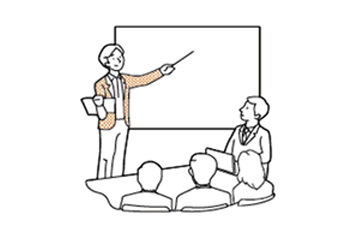

Web業界に入りたいけど、どんな仕事があるの？そんなあなたへ職種をまとめてみた！

Webプロデューサーはプロジェクトの総責任者です。 プロジェクトのまとめ役となり、リーダーシップが必要とされます。社内スタッフだけではなく社外のクライアントとも打ち合わせをしながら、プロジェクトを遂行しなければなりません。
Webディレクターとは現場の指揮、監督をするポジションです。 Webデザイナーやプログラマーなどをまとめて納期までのスケジュール管理やクライアントと打ち合わせをしたり、Web制作において全てを取り仕切る職業です。Webデザイナーやプログラミングの知識だけではなく、コミュニケーション能力やリーダーシップが求められます。
WebデザイナーはWebサイトのデザインやバナー制作を主な業務としています。 Webサイトのデザインとはサイトのレイアウトやベースカラー・フォントカラーといった配色や写真の加工など、サイト全般のデザインをする仕事です。
コーダーとはサイトがWeb上で表示されるようにコーディングする仕事で、HTMLとCSSのスキルが必要となります。またWebデザイナーがこれらを担当する場合もあります。JavaScriptなど高度なコーディングもできる人はフロントエンドエンジニアと呼ばれています。
SE(システムエンジニア)とはお客様の要望をくみ取って設計書を作り、見積もりやスケジュールなどを作成し、プログラマー指揮管理をするお仕事です。プログラマーはSEが作成した設計書に基づき、プログラミングをします。